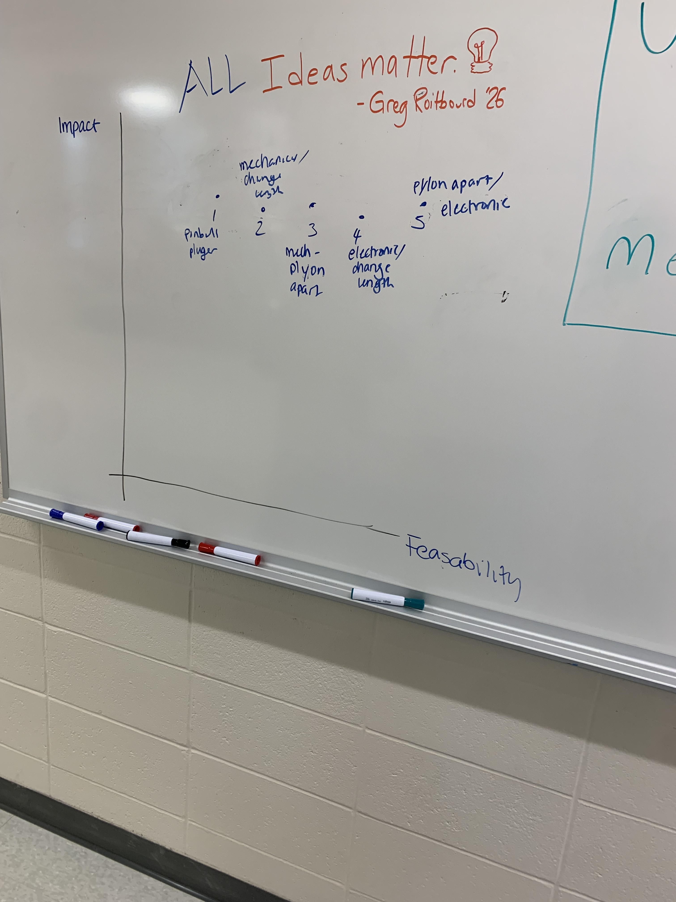

Our concept was formulated with a specific client in mind; a French bulldog named Nugget. The dog belongs to the family of my partner for this project. Some time ago, she suffered paralysis in her rear legs for reasons uncertain; as such, she now requires a wheelchair to go about her daily activities, such as going on walks or playing with the two other dogs in the family. While she already has a wheelchair, we sought to improve it, either with an entirely new wheelchair or a supplement to the existing one. This required both identifying a specific problem to address and determining the best means to solve that problem. While Nugget being a dog made identifying specific struggles more difficult, we still made an effort.
figure>
With this in mind, we brought Nugget into class. Initially, we had hoped to scan the wheelchair she was currently using, for the purpose of measurements. This proved to be too ambitious, as the 3D scanner is not always easy to operate. The endeavor was not entirely unsuccessful, however, as we were able to observe Nugget’s behavior as she used the wheelchair and identify specific flaws. One thing immediately became obvious from watching her. At times, Nugget would become tired and attempt to lie down. This entailed lowering her front legs and taking the weight off of them; however, her hind quarters could not be lowered due to the design of the wheelchair, resulting in her back arching in a way that appeared to be uncomfortable. We decided that our product should be a mechanism to allow Nugget to relax in a more comfortable position.

We debated several ways to go about doing this. First, we considered lowering the back of the wheelchair in such a way that it remained roughly level as the front lowered. We considered several ways to accomplish this. First, we considered moving the wheel pylons further apart, which would have entailed incorporating a hinge mechanism. We also considered changing the length of the wheel pylons, which was already designed to be adjusted manually. Furthermore, for both of these approaches, two possibilities presented themselves; using a mechanical system of cables and pulleys, based on the angle of the wheelchair, and a more advanced approach using cameras and motors to equalize the height of the front and back ends of the wheelchair. This gave us a total of four possible combinations, but all of these would have been very complicated, and likely added quite a bit of weight on a wheelchair meant for a rather small dog. However, an entirely different solution was proposed; a pair of supportive props meant to keep the front of the wheelchair up, while still allowing Nugget to relax. The idea was inspired by a wearable chair meant for humans; however, rather than a foldable design, the props would simply hang down slightly above the ground when Nugget was standing. It was later realized that the design of (and possibly an actual pair of) pinball plungers could be incorporated into this mechanism. With this, we have a coherent design plan and can proceed to actualizing it.
I learned a few lessons from this component of the project. Primarily, I learned that pet wheelchairs of very high quality are already available; this is perhaps not terribly surprising, but it is interesting and certainly not something I was remotely aware of. Furthermore, I am now more appreciative of the difficulties of designing a product for an animal, as they are obviously not very communicative in the traditional sense and gauging their wants and needs can be a challenge. Finally, I have gained a greater appreciation for careful deliberation and discussion. Our approach was very unclear at the beginning, but it has gained far more clarity since then. Overall, this has been an enlightening experience, and I look forward to the next phase of this project.